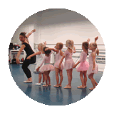

|

|
Balletschool
'de Balletboetiek' is een onderneming van Babs
Broeders.
In 1997 studeerde ik af als dansdocente aan de
Dansacademie aan de Hogeschool
voor de Kunsten Arnhem
, en startte ik met lesgeven. In Elst begon mijn loopbaan
in 1998 bij de toenmalige balletschool 'Dans-Anne'. Sindsdien
heb ik op diverse dansscholen, basisscholen en culturele
instellingen de nodige ervaring op gedaan.
Met trots kan ik zeggen dat sinds augustus 2008 mijn eigen
balletschool 'De Balletboetiek' een feit is.
Dansplezier speelt een grote rol in mijn lessen en beheersing
van de danstechniek maakt het dansen nog plezieriger.
Door zelf te blijven trainen en bijscholingen te volgen
probeer ik op de hoogte te blijven van de danstechnieken,
lichamelijk inzicht en pedagogische mogelijkheden.
De Balletboetiek is ook aangesloten bij het NBDO
Dansbelang de bond voor dansprofessionals.
Dansen is voor mij een liefde, en ook een soort fijne
verslaving die bij mij nooit is overgegaan. Ik hoop dat
ik mijn dansleerlingen ook van deze liefde kan laten meegenieten.
Babs.
|

foto: Danielle Corbijn |
Britt
de Vries
Afgestudeerd in 2016 aan de opleiding Docent Dans ArtEZ
Dansacademie Arnhem.
Naast het lesgeven bij Babs Balletboetiek geef ik ook
nog les in Kampen in verschillende stijlen zoals Modern,
Funky-jazz, Klassiek en Pilates.
Het dansen en doceren is altijd al een fascinatie van
mij geweest. Desondanks heb ik voor mijn dansopleiding
nog een andere opleiding gedaan waar ik ook weg van was
namelijk film. Beide zijn een grote passie voor mij dus
ik probeer dan ook zo veel mogelijk een overlapping te
maken tussen deze twee kunstdisciplines.
|